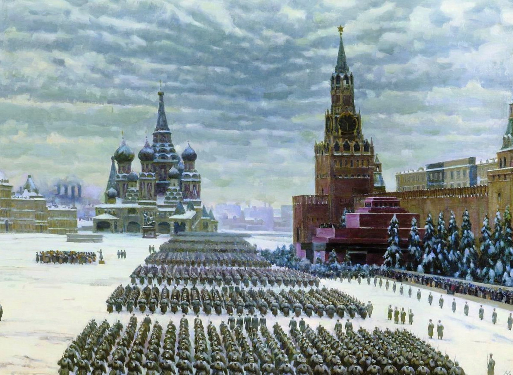

Константин Фёдорович Юон
Парад на Красной площади 7 ноября 1941 года, 1949

Холст, масло, 71,5 x 105 см
ГИМ, Москва.
Сюжетный центр картины Константина Юона — парад на Красной площади в честь 24-й годовщины Октябрьской революции в 1941 году. Это было тревожное время: битва за Москву в самом разгаре, линия фронта находилась всего в нескольких десятках километров от столицы. Многие политические деятели считали проведение парада в критический для страны момент нецелесообразным, так как денег не хватало даже на первостепенные нужды Красной армии. И всё же он состоялся, показав тем самым — боевой дух народа не сломлен, а Москва никогда не будет отдана врагам. Сама Москва на картине Юона — это не просто фон. Столица выступает одним из главных действующих лиц наряду с военными. Небо заволокло тучами, снег хрустит под тяжёлым стройным шагом солдат, вдалеке дымят трубы МОГЭСа… Такую Москву, суровую, сосредоточившуюся, мобилизовавшую все свои силы, изображает на полотне художник. Парад не похож на те, которые столько раз видела Красная площадь: нет зрителей, с флагами и цветами приветствующих красноармейцев, да и сами солдаты одеты не в парадную, а в походную форму: отсюда — прямиком на фронт. Двумя центрами картины становятся Спасская башня и храм Василия Блаженного как символы Москвы и грандиозных военных побед прошлого.